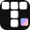
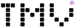

Знак из тех же осколков
Знак и первый экран теперь одна система: буква Т собрана из плиток, как заголовок, а одна плитка вырвалась и стала перламутровой плашкой сообщения. Это и есть суть TMV Labs: из бизнеса выходит ответ клиенту.
Наведи мышь
Как знак живёт на носителях

TMV Labs
TMV LabsTMV Labs
Аватар Telegram и Авито

Слово TMV из плиток, для обложек и крупных размеровФайлы
assets/logo/mark.svg,mark-light.svg: знак для светлого и тёмного фонаassets/logo/favicon.svg: знак на тёмной плашке, читается и на светлой, и на тёмной вкладкеassets/logo/wordmark-tmv.svg: слово TMV из плиток